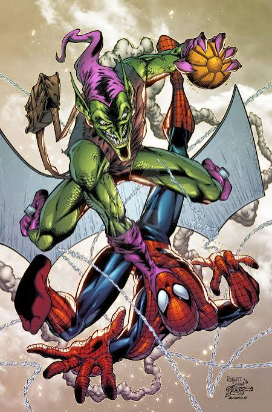

Who Is Spider-Man?
Get this image at DearPlayers, Licensing details Copyright: PSN MY Gift Card - DearPlayers United States Learn More Credit: PSN MY Gift Card - DearPlayers United States Creator: DearPlayers
Spider-Man is one of the most famous superheroes in the world. He was created by Marvel Comics and has inspired millions of fans.
His real name is Peter Parker, a teenager from New York City. Before becoming Spider-Man, he lived an ordinary life.
Everything changed when Peter was bitten by a radioactive spider. The bite gave him amazing powers and abilities.
Peter soon learned that having powers also meant having responsibilities. He decided to use his abilities to help people.
Today, Spider-Man is known as a hero who protects his city and stands up for what is right.
Spider-Man's Powers
Licensable at Flickr · Creator: marvelousRoland
Spider-Man has incredible strength that helps him rescue people and stop dangerous villains.
He can climb walls just like a spider, allowing him to move across buildings with ease.
His speed and agility are extraordinary. He can jump high, dodge attacks, and perform amazing acrobatic moves.
Spider-Sense warns him when danger is near. This special ability helps keep him and others safe.
Using his web-shooters, Spider-Man swings through the city and catches criminals without causing unnecessary harm.
Spider-Man's Enemies

Get this image at DeviantArt, Licensing details Copyright: AlonsoEspinoza Learn More Credit: AlonsoEspinoza on DeviantArt Creator: AlonsoEspinoza
Spider-Man has faced many powerful villains throughout his adventures.
One of his most famous enemies is the Green Goblin, who uses advanced technology and dangerous weapons.
Doctor Octopus challenges Spider-Man with his powerful mechanical arms and brilliant intelligence.
Venom is another major enemy. He has abilities similar to Spider-Man and is one of his toughest opponents.
Even when facing powerful enemies, Spider-Man never stops fighting for justice and protecting innocent people.
Why Spider-Man Is a Great Superhero
Licensable at DeviantArt · Copyright: PkBlitz, Credit: PkBlitz on DeviantArt, Creator: PkBlitz
Spider-Man is more than a superhero with cool powers. He is a symbol of courage, responsibility, and kindness.
He often puts the needs of others before his own. Even when life is difficult, he chooses to help people.
His famous quote, "With great power comes great responsibility," teaches an important lesson about using our talents wisely.
Spider-Man makes mistakes, just like everyone else. However, he learns from those mistakes and continues trying to do better.
That is what makes Spider-Man truly inspiring. He reminds us that anyone can be a hero by helping others, standing up for what is right, and never giving up.